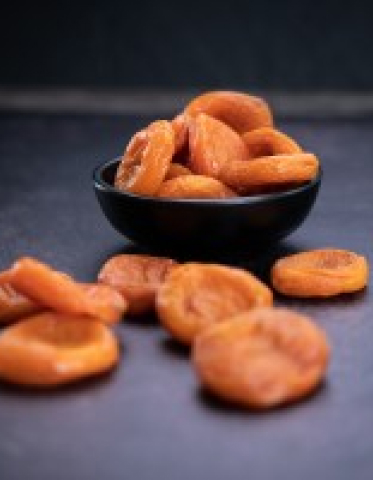

#1 Сухофрукты в Кыргызстане
Экспорт сухофруктов, грецких орехов, фасоли и мёда в Европейский Союз

-

Изюм голден - (жомбо-крупный)
Learn more -

Абрикос
Learn more -

Изюм черный Жомбо
Learn more

Kyrgyz Fruit
Сухофрукты — высушенные фрукты или ягоды, из которых путем высушивания была удалена большинство влаги, которая находилась в свежих фруктах или ягодах. Сушатся сухофрукты естественным путём (например, на солнце), или с применением промышленных методов (например, с помощью дегидратора или сушилки для овощей).
Орехи
Миндаль в скорлупе
Learn moreМиндаль в скорлупе
Learn moreГрецкий орех экстра светлый
Learn moreПрисоединятесь к нам!
Подпишись на получение новостей и выигрывай!
Несколько раз в месяц, но не более раза в неделю, мы высылаем информацию об актуальных акциях, о лучших предложениях, о распродажах и ценных конкурсах.
О компании
Наша компания основана в 2009 году. Мы являемся крупным производителем и экспортером сухофруктов в Кыргызстане. На сегодняшний день KYRGYZ FRUIT — один из лидеров на Кыргызском рынке по производству и продаже биологически чистых, а значит произведённых из натурально выращенного сырья, сухофруктов. Мы экспортируем нашу продукцию во все страны Западной Европы. Самые большие объёмы поставок осуществляются в такие страны как Великобритания, Германия, Израиль.
Вся продукция производится на высококачественном оборудовании. Изюм проходит лазерную обработку на оборудовании VISYS, а также сортируется по цвету и размеру. Качество нашей продукции отвечает всем международным стандартам, так как она производится в стерильных условиях из экологически чистого сырья. Грамотная работа квалифицированного персонала, отличное знание аграрного дела и желаний потребителей позволяет нашей компании стремительно и динамично развиваться на мировом рынке.
- Оригинальное происхождение сырья (Произведено в Кыргызстане)
- Непередаваемый вкус Кыргызских сухофруктов
- Комплексная поддержка заказчика (от технической до визовой)
- Прямые поставки (отсутствие посредников)
- Разумные цены